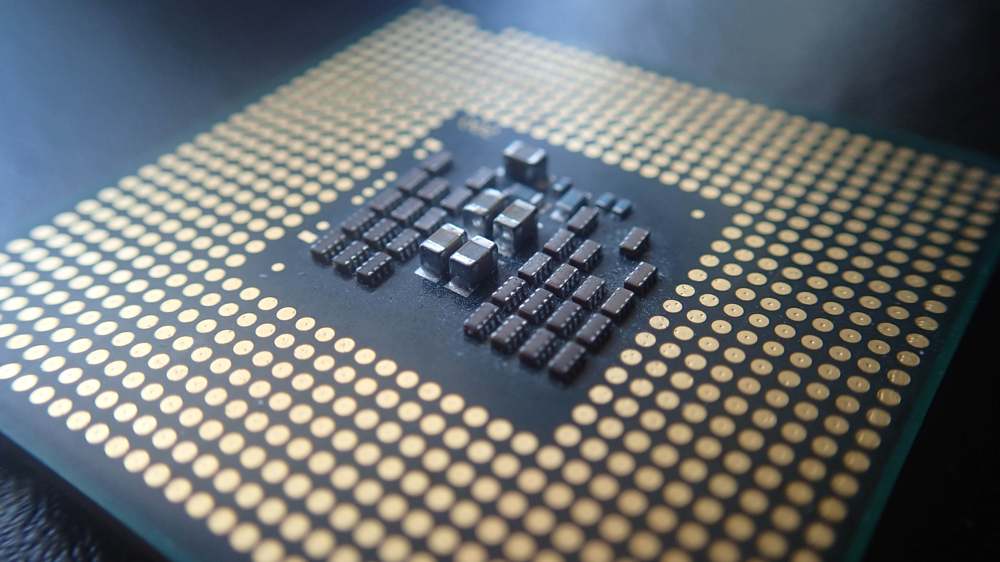

Cpu är den viktigaste komponenten i en dator och den är gjort av materialen silikon. Cpu kallas också för datorns
hjärna för att den utför program i en dator, till exempel om vi skulle be en
dator att räkna ut 3+3, så är det cpu som bestämmer att svaret är 6. Det finns
olika typer av cpu och de har olika användningsområden. AMD har två olika
kategorier, E-serien och A-serien. E-serien används för engenbruk och den har
bra batteri kapacitet men A-serien är uppdelad i 4 olika kategorier, A4, A6,
A8 och A10. A4 används som städ fär bättre mediehantering, som t.ex filmer
och youtube. A6 stöder turbo core (turbo core ger cpu extra kraft när den
behöver det), den kan hantera tuffare uppgifter mycket enklare. A8 används
ofta för kontorsuppgifter och kan hantera enkel spel som t.ex Minecraft och
team fortress 2. A10 klarar av allt, t.ex nya spel, kontorsuppgifter och
HD-filmer. Intel har också delat upp processpr i olika serier, celerom,
pentuim, i3, i5, i7. Celeron fungerar likadant som A4 och A6, pentium används
ofta som kontorsprogram, i3 fungerar som pentium men den är snabbare, i5
använder också turbo bost exakt likadant som A6, i7 är en förbättring av av i5
och kan hantera tunga program/spel som t.ex the witcher 3.